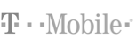

◎
Strategy & transformation
Readiness assessment, target state, operating model, roadmap, and governance—all anchored in measurable business outcomes.
- Technology strategy
- Digital modernization
- Business case & roadmap
Enterprise technology transformation
We help you modernize your technology stack—leveraging AI/ML, cloud, and IoT—without disrupting your business, using cost-competitive global delivery backed by 25+ years of experience leading complex, large-scale transformation programs.
A4O combines U.S.-based strategy and program leadership with specialist AI/ML, cloud, IoT, automation, and software engineering. We define the right outcome, coordinate trusted global capabilities, and lead execution through adoption and measurable value.
What we do
Right-sized leadership and specialist teams for digital modernization, AI, cloud, IoT, automation, regulated transformation, and M&A-driven change.
Readiness assessment, target state, operating model, roadmap, and governance—all anchored in measurable business outcomes.
Mobilization, governance, Agile or hybrid delivery, risk management, executive reporting, and benefits tracking.
Leadership alignment, use-case prioritization, workforce readiness, workflow redesign, training, and adoption measurement.
Architecture, requirements, partner selection, solution oversight, integration planning, quality assurance, and transition.
Compliance-driven programs, enterprise platforms, operating-model change, process redesign, and M&A integration.
Market readiness, positioning, introductions, pilots, commercialization, and U.S. client leadership for international firms.
The A4O model
A4O leads the business and organizational transformation. Carefully selected technology partners engineer, integrate, and support the solution.
Discuss your initiative ↗Business case · Roadmap · PMO · Stakeholder alignment · Benefits
AI/ML · Software · Automation · IoT · Integration · Support
Partner-powered capability
Access the right technical disciplines without building every capability internally or managing a fragmented vendor landscape.
Predictive analytics, optimization, computer vision, generative AI, MLOps, and production integration.
Scalable web, mobile, cloud, and enterprise applications built around real operating needs.
Workflow automation, shared-service platforms, process optimization, and service management.
Connected products, enterprise digitalization, data integration, monitoring, and real-time operational insight.
Secure architecture, privacy, audit readiness, risk management, and regulatory alignment.
Computer vision, predictive quality, equipment intelligence, optimization, and AI-enabled industrial workflows.
We partner with specialist teams
One coordinated model for strategy, execution, organizational adoption, and technical delivery—from business case through production operations.
AI & advanced analytics delivery
QuantUp develops AI-enabled products, improves business processes through AI and machine learning, and transfers know-how to client teams.
A4O + QuantUp: A4O aligns the organization and leads the program; QuantUp designs, builds, and deploys the AI and analytics systems.
Enterprise software, IoT & automation
Established in 2011, GammaSoft develops software for public institutions, regulated industries, and enterprise customers.
A4O + GammaSoft: A4O provides client strategy, U.S. engagement, and program leadership; GammaSoft provides engineering, integration, and support.
Selected partner experience
These examples demonstrate the breadth of environments in which QuantUp and GammaSoft have worked. They are shown as partner references, not as direct A4O client claims.

Prioritize, govern, build, integrate, redesign workflows, drive adoption, and measure value.
Modernize platforms and processes through cloud, automation, software, and disciplined delivery.
Support shared services, compliant workflows, procurement platforms, and digital public services.
Apply predictive quality, optimization, computer vision, IoT, and workflow automation.
Lead technology and operating change where risk, compliance, and coordination are critical.
Help international technology companies position offerings and manage U.S. engagements.
Testimonials
Experienced leadership, trusted technology partners, and practical execution—measured by the difference the work makes for clients and teams.